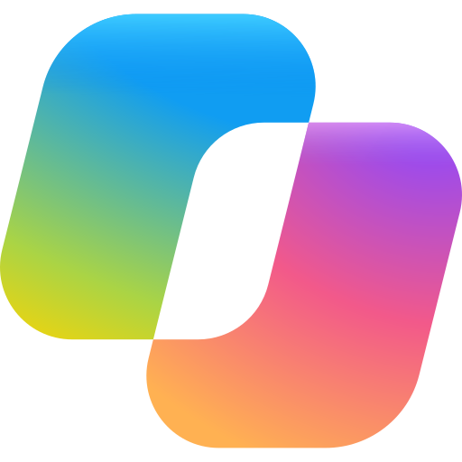

← 返回四象限
AI 与个人助手 · 个人对照页
从你要做的事，选一个开始。
这一页先对照四象限上的 11 种 AI，下面另外一节是 2026-11 核对官网后补上的 11 个个人助手。不讲复杂原理，只说各自擅长什么、在哪用、费用和谁能用、适合谁、用的时候要注意什么。
先看你所在地区和套餐能不能用，以官网为准。第一节按四象限的产品顺序排列。
Claude Duet
OpenAI dots
Grok Bot
OpenClaw
Gemini Spark
Hermes Agent
Meta Muse
Hark
Quest
Pally
Wabi
这 11 个以外的个人助手 ↓
擅长什么 整理邮箱和日历，做晨间简报、起草回复；也能把较大的工作整理成文档、表格或幻灯片，交给你审。
在哪用 独立的 iOS / Android 应用；电脑上可在 claude.ai 网页打开，可用文字或语音。官网未列出独立桌面应用。
费用和谁能用 研究预览，美国地区的 Claude Pro、Max、Ultra 用户需排队，暂不含 Team / Enterprise；与 Claude 其它功能共用套餐用量。个人套餐：Free $0（不在上述资格内）；Pro 按月 $20，年付预付 $200（折合 $17/月）；Max $100/月；Ultra $200/月。价格可能调整，以官网为准。
适合谁 想把办公事务交给助手持续跟进，并愿意检查结果的人。
使用上要注意什么 可能看错邮件线程、误判紧急程度，或漏掉两次检查之间新来的急事；目前不能观看或接管它的浏览器。个人跑腿如订票不如办公任务强；不能打电话或发短信，经你同意可从已连接邮箱发邮件。不能交易证券、在账户间转账或登录别人的账户；Microsoft 365 连接尚不可用。
什么时候选它 你主要想整理邮件、准备材料，并让它主动提醒你。
擅长什么 持续推进项目，做调研、准备文件、跟进日程和客户反馈；可配合 Codex 写和改代码。
在哪用 ChatGPT 网页、iOS / Android 手机应用及桌面应用（帮助中心明确包含 Windows）；可在 Slack、Microsoft Teams 联系。创建时可用手机应用、桌面应用或电脑网页，手机网页版不支持。短信联系仅为有限测试：须用 iMessage 或 RCS，不支持普通 SMS，面向美国、加拿大、墨西哥的部分个人 Pro 用户，Business / Enterprise 不可用。
费用和谁能用 向符合条件市场的 Pro、Business Premium、Enterprise 推出，帮助中心也列有 Edu、Healthcare 工作区。个人 Pro 须满 18 岁，且不在欧洲经济区、瑞士、英国；Free / Go / Plus 不含 Dots。符合条件的 Pro / Business Premium 包含第一个 dot，不另收费，含一定深度工作额度，逐步放号，可能等几天。套餐具体金额未核实，请以官网为准。企业单独计费：2026-11-04 至 11-18 为预览，11-18 起对已开启的 dot 计费，管理员可关闭；带阿联酋数据或推理驻留要求的工作区不可用。价格可能调整，以官网为准。
适合谁 希望交代一个项目后，让助手在对话之间继续推进、再带着待决定事项来找你的人。
使用上要注意什么 由你决定能连哪些应用、哪些动作需先批准。影响账户或对外分享信息的操作会经自动审查，有些仍需你批准；改密码等事情由你自己做。
什么时候选它 你需要持续跟进一个项目，而不只是问一次问题。
擅长什么 同时安排多个 Bot 分头做事；演示一次流程后，可保存成例行任务。能做演示文稿、营销活动、订位和同步日程。
在哪用 macOS（Apple silicon / Intel）、Windows（x64 / Arm64）、Linux（x64 / Arm64）桌面应用；iPhone 需 iOS 18+，iPad 需 iPadOS 18+，Android 需 Android 9+。文档还介绍了 Slack 和 X 上的 @bot 用法。
费用和谁能用 The X Subscription 的 Premium $30/月、Super $100/月、Ultra $200/月包含 Grok Bot；免费档和 Plus（$8/月）未列出 Grok Bot。也可用团队或企业方案。价格可能调整，以官网为准。
适合谁 想像交代同事一样布置任务，或有重复流程要处理的人。
使用上要注意什么 敏感操作可经自动审查。官方称云电脑传输和静态数据加密，可选择不用于训练；登录使用 Cursor 账号或单点登录。
什么时候选它 你有几件事想同时推进，或有固定流程要重复做。
擅长什么 装在自己的电脑上，在常用聊天应用里整理邮件、管理日历、办理值机；也能浏览网页、填表和读写文件。
在哪用 自己安装：桌面应用支持 macOS 15+、Windows 10/11、Linux，也可用命令行安装。可在 WhatsApp、Telegram、Discord、Slack、Signal、iMessage 等聊天应用里使用（官网称共 29 个渠道）。
费用和谁能用 软件本身免费，无托管服务或订阅；所用 AI 服务可能另收费，需自己准备服务密钥或本地服务。适合愿意自行安装、管理电脑和密钥的人。价格可能调整，以官网为准。
适合谁 愿意自己安装、管理电脑和服务密钥，希望把记忆保存在自己机器上的人。
使用上要注意什么 安装和配置比打开网站多几步；电脑操作权限由你选择。数据在自己设备上，但消息仍会发往你配置的 AI 服务和聊天平台。默认每日版本检查可关闭。
什么时候选它 你愿意花时间配置，并想自己管理它的运行环境。
Google 现在把这个功能叫做「Tasks in Gemini」（任务），以前叫 Gemini Spark。这里沿用四象限的显示名；使用时可在对话框旁切换「Chat / Task」。
擅长什么 清理邮箱、盯机票酒店降价，做带出处的调研并生成文档、表格和幻灯片；可配合 Gmail、日历等 Google 工具定时处理任务。
在哪用 Gemini 手机应用、Mac 上的 Gemini 应用，以及 gemini.google.com 网页。
费用和谁能用 须满 18 岁，使用个人 Google 账号（暂不支持工作 / 学校账号），订阅 Google AI Pro 或 Ultra，并开启 Keep Activity。在 Gemini 应用已开通的地区可用，但欧洲经济区、尼日利亚、瑞士、英国除外。今日美国订阅页：Pro $19.99/月；Ultra 起价 $99.99/月，另有 $199.99/月档。价格可能调整，以官网为准。
适合谁 日常已经使用 Google 个人账号和相关应用，希望把一件事交给它跟进的人。
使用上要注意什么 功能仍偏试验，可能出错；不要在任务对话里直接输入登录、支付或敏感信息。发消息、改删数据、付款、填表等敏感步骤应先由你确认；本机浏览时可访问已登录网站，设备需保持唤醒。
什么时候选它 你常用 Google 应用，想把邮箱、日程和材料整理放在一起做。
擅长什么 在多个聊天应用或电子邮件里使用同一份记忆；记住项目，并安排定时报告、备份和简报，也能搜索和浏览网页。
在哪用 macOS、Windows、Linux 桌面应用，也可用命令行安装。可在 Telegram、Discord、Slack、WhatsApp、Signal、电子邮件和命令行里共用一份记忆；也可选 Nous Portal 云端托管。
费用和谁能用 软件免费开源，所用 AI 服务和可选托管另收费。Nous Portal 档位：免费档为按量付费、仅免费模型；Plus $20/月、Super $100/月、Ultra $200/月。付费档含托管云助手和更多模型，内存及磁盘随档位不同。价格可能调整，以官网为准。
适合谁 愿意自行安装，或使用 Nous 账号托管助手，希望长期跟进项目的人。
使用上要注意什么 本地程序关闭后，定时任务不会运行；托管实例另算。
什么时候选它 你想让项目记忆跟着走，并安排重复的报告或备份。
擅长什么 整理邮件、订位、购物、管理日历、制定健身计划；可在 Muse 应用或 WhatsApp 里发消息，让它按目标拆计划并推进。
在哪用 官方介绍先在美国的 iOS、Android 和 muse.ai 推出；官网也写可在 Muse 手机或桌面应用、WhatsApp 里发消息。App Store / Google Play 有官方应用；桌面应用的具体获取方式未核实，请以官网为准。
费用和谁能用 免费有用量上限，用完可等刷新或升级。Power $20/月（每周 5 亿 Muse tokens）；Maximum $100/月（每周 30 亿 Muse tokens）。产品与订阅仍在有限测试，并非所有地区可用；须满 18 岁或所在地法定成年年龄，用 Meta 账号登录。价格可能调整，以官网为准。
适合谁 希望用发消息的方式处理日常生活事务，并愿意授权相关应用的人。
使用上要注意什么 可能不准确或做出意外动作，要检查并在必要时接手。发邮件、下单等敏感操作先问你，并有操作记录。可选择不把互动用于训练；官方称对话和虚拟机数据不进入 Meta 广告系统。
什么时候选它 你想围绕一个生活目标，让助手拆计划、继续跟进。
擅长什么 在一个长期对话里处理订餐、报销、快速调研、日历和旅行，也能跟进求职等大项目；可操作网站，并按描述做小型面板。
在哪用 iOS、Android 和网页；可从 App Store / Google Play 下载 Hark Pro。
费用和谁能用 完整功能可免费使用，但有用量上限。Hark Pro² $20/月，用量约为 2 倍；Hark Pro³ $100/月，用量约为 10 倍。可设置自动加购额度。价格可能调整，以官网为准。
适合谁 想在网页或手机上，把零碎事务与旅行、求职等较长计划放在一起跟进的人。
使用上要注意什么 付款、登录等会先问你。敏感凭据存放在「Secured by Hark」加密库，官方称员工和个人无法直接查看；官方说不会出售数据或用于广告。
什么时候选它 你希望在同一段对话里接着处理生活杂事和长期计划。
擅长什么 先了解你的目标，整理关于你的记忆和人际关系图，再推动你行动；可按目标做小应用，并协助管理其它 AI 助手。
在哪用 目前以 iOS 应用和 iMessage 为主，iOS 需 18+。App Store 还列出兼容 iPad（iPadOS 18+）、Mac（macOS 15+ 且 Apple M1 或更新）、Apple Vision（visionOS 2+）。Android 支持未核实，请以官网为准。
费用和谁能用 App Store 标为免费下载。官网没有完整价目表，价格未在官网价目页核实；是否全程免费、有无订阅或地区限制：未核实，请以 App Store 和官网为准。价格可能调整，以官网为准。
适合谁 想跟进长期学习或生活目标，愿意授权个人信息并检查记忆内容的人。
使用上要注意什么 它会用较多个人生活信息来写记忆；要愿意授权，并自己检查、改正记忆。可选择连接哪些应用、哪些聊天可见。
什么时候选它 你想先理清长期目标，再有人持续提醒你推进。
擅长什么 通过消息处理提醒、预订、购物、调研和打电话排队；读群聊帮你订位，连上邮箱、日历后做晨间简报和自动提醒。
在哪用 今日官方定价页写明：iMessage、Android RCS、WhatsApp、Telegram。不用安装 Pally 应用；也可连接自己的 WhatsApp 账号，让它协助已有聊天。
费用和谁能用 官方称对所有人免费，无需信用卡、排队或邀请；用量几乎不限，额度在一周内恢复，到上限前会提醒，达上限后仍可聊天。普通用户的付费加项为 Cloud Mac $95/月。另有仅邀请的 Pally VIP（$1,000/月或 $10,000/年），未作为普通选项推广；旧 Pro / Max 方案已不存在。价格可能调整，以官网为准。
适合谁 想直接在消息应用里发消息办事，不想另装 Pally 应用的人。
使用上要注意什么 发送、预订或购买你尚未同意的事情前会先问你；官方称不会未经询问私自给别人发消息。通过它下单时会向商家收手续费，但商家不能付费改变推荐。
什么时候选它 你更习惯发消息交代事情，也需要提醒或电话排队。
擅长什么 自己用或和家人、朋友、同事一起用；安排晚餐、家庭日历和旅行，把计划做成共享日历、地图行程或投票，也能跟进退款、退货和遗漏的事。
在哪用 iOS、Android、Mac、Windows，入口见官方下载页。
费用和谁能用 条款写目前免费，以后若增加付费功能会先通知。须满 13 岁；服务面向美国访客，不保证美国以外可用。价格可能调整，以官网为准。
适合谁 经常需要与伴侣、家人、朋友共同安排日程或旅行的人。
使用上要注意什么 重要操作先征求你同意。条款称不会用你的对话训练模型；群聊里发出的内容在你离开后仍可能对其他成员可见。
什么时候选它 你希望几个人在同一段对话里一起商量、一起推进计划。
这 11 个以外的个人助手
这些是 2026-11 核对官网后加进来的，不在四象限图上。
Cue by Manus
Genspark Claw
Perplexity Computer
Kimi Agent
AutoGLM
千问办公
Lindy
Alexa+
Fellou
Microsoft Copilot Cowork
Siri AI
擅长什么 可养一组助手，每个可有自己的邮箱、电话、钱包和电脑；可在你授权的应用（含邮件、日历、即时通讯）里做事；扫描商家二维码后可浏览菜单、帮你选和下单，支付由你确认；可帮你找机票、酒店或日常用品并比较，预订、下单和支付需你确认；可用 Memory 和 Dream 记住偏好与计划；可按日程或支持的事件做定时自动化。
在哪用 手机和桌面。App Store：iPhone 需 iOS 18+，iPad 需 iPadOS 18+，Mac 需 macOS 15+ 且为 Apple M1 或更新芯片。另有 Google Play。也可在 Manus 侧边栏的 Agents (Cue!) 标签扫码下载。
费用和谁能用 目前需要邀请码；可免费创建账号，登录后输入邀请码；获得访问后，Plus membership 免费包含。应用本身标为 Free，含应用内购买。App Store 列出的项目包括：部分地区 Phone Number $9.99、Cloud Computer $39.00、Cue Pro $100.00、Cue Max $200.00（官方未写清这些金额的计费周期，不要理解成「每月」）。Cue 电话号码与 Manus 会员分开购买。Manus 会员（帮助中心）：Free $0/月（每日刷新 300 credits、1 个并发任务、2 个定时自动化）；Pro 从 $20/月起（年付可享 17% 折扣）；另有从 $40/月起的更高 Pro 档；Team 从 $20/席/月起（年付同样可享 17% 折扣）。价格可能调整，以官网为准。
适合谁 想养一组能办事的个人助手，并愿意用邀请码、自己确认支付和对外联络的人。
使用上要注意什么 目前需邀请码，可能排不上。支付、对外联络等要你确认或受你设定的权限约束。电话号码是另购项目。Manus 定价页分档请以官网定价页现场显示为准。
什么时候选它 你想要有自己邮箱、电话和电脑的个人助手团队，来处理日常跑腿、预订和自动化。
擅长什么 可连接 WhatsApp、Slack、Teams、Telegram、LINE、Discord、Signal、Google Chat、飞书等发消息；自带 Claw 邮箱，连上 Gmail 或 Outlook 后可代发邮件；可登录 Gmail/日历/云盘、Outlook、社交账号、GitHub、Slack、Notion 等并代为操作；可设定时任务和定期查看收件箱、日历；预装多项技能（调研、邮件、日历、幻灯片、文档、代码、图/视频、打电话等）；跨会话记住偏好。同一平台的 Super Agent 是按任务交回文件的会话式智能体，不是 Claw 的另一个名字。
在哪用 网页云电脑版 genspark.ai/claw；也可下载 macOS 或 Windows 桌面应用，在本地电脑运行。可在上述聊天应用里联系。两种方式可用同一账号同时使用。
费用和谁能用 云电脑版需要单独的 Cloud Computer 订阅（Lite / Standard / Powerful）。今日产品页限时写：Starting from $9.99/mo · 75% off，并可获最多 10,000 bonus credits；各档常规定价请以结账页为准。桌面本地模式无需 Cloud Computer 订阅，只需 Genspark 账号和 credits，但电脑要开机且应用要打开。Credits 与整个 Genspark 账号共用。Genspark 会员（帮助中心，美元）：Free $0（100 credits/天，有终身免费额度上限，1GB）；Plus $24.99/月，或年付 $19.99/月（$239.99/年）；Pro $249.99/月，或年付 $199.99/月（$2,399.99/年）；Team $40/席/月，或年付 $35/席/月（$420/席/年）。会员权益说明写明有效至 2027-06-30。价格可能调整，以官网为准。
适合谁 希望有一个持续在线的「AI 员工」，在云电脑或自己电脑上处理邮件、日历和定时任务的人。
使用上要注意什么 取消云电脑订阅并在周期结束后，云电脑会被回收，上面的数据永久删除，需事先备份。本地模式可访问你电脑上的文件，官方建议先指定工作文件夹，并在改文件前备份。对群发邮件、发帖、删文件、资金操作，官方建议先看计划再执行。频道私信默认需配对；若设成开放，任何知道地址的人都可能让它代你行动。
什么时候选它 你想让助手一直在线，连上聊天应用和常用服务，替你处理邮件和日程。
擅长什么 用自然语言布置任务，在隔离环境里用浏览器、文件和已连接的工具把整套流程做下去，可在后台运行很久。可做持续监控、并行调研和浏览器自动化；可连接 Gmail、Slack、Notion、Calendar 及多种工具；可创建应用、网站和报告。Comet 是 Perplexity 的 AI 浏览器，不是与 Computer 平级的另一张独立卡片。
在哪用 向 Pro 和 Max 订阅者提供，可用于电脑、手机、Slack 和 Microsoft 365；也可在 iOS 应用的新标签中使用，并在 Slack 里用私信或频道提及。
费用和谁能用 需要 Pro 或 Max（企业档也有 Computer）。今日未能打开官网定价页现网。具体价格请看官网定价页。Computer 任务会消耗 credits 或 Pro 的每周包含用量；官方写可另购 credits。价格可能调整，以官网为准。
适合谁 已经在用 Perplexity，希望把多步工作流交给它在后台做完的人。
使用上要注意什么 任务会消耗 credits 或每周包含用量。官方写可另购 credits，并有自动补额和单周期消费上限。今日现网定价页未能复核，请先看官网。
什么时候选它 你想布置一项能跑很久的任务，让它用浏览器和已连接的工具做下去。
擅长什么 可自主规划并完成复杂任务，做调研、办公文档、网站和数据分析，并交出可下载的成品。包括网站生成并部署，Word/PDF/Markdown 文档，Excel/CSV 表格分析，PPT，深度研究长报告，以及最多 300 个子代理并行。同一体系里还有 Kimi Claw（官方称为部署在云端的 OpenClaw，可做零部署云端自动化；本页不另列卡片）。
在哪用 网页版 https://www.kimi.com/agent。手机/平板：打开 Kimi App，在对话框上方的模型切换中选择 K3 或 K3 集群模型。
费用和谁能用 Agent 使用 Kimi 统一会员额度，按实际消耗，与深度研究、PPT、文档、表格、Kimi Code、Kimi Work、Kimi Claw 等共享额度池；按月刷新，未用完不结转。国内套餐（帮助中心截图日期 2026-10-19，请以购买页为准）：Go ¥49/月，年付 ¥468/年（折合 ¥39/月）；Plus ¥99/月，年付 ¥948/年（折合 ¥79/月）；Pro ¥199/月，年付 ¥1,908/年（折合 ¥159/月）；Max ¥699/月，年付 ¥6,708/年（折合 ¥559/月）；Ultra ¥1,399/月，年付 ¥13,428/年（折合 ¥1,119/月）。Go 含日常文档、PPT、深度研究和网站部署，不含 Kimi Code；Plus 面向需要 Kimi Code 和 Agent 集群的用户；Pro 面向需要目标模式、专属 Kimi Claw 和更多额度的用户。免费档能否完整使用 Agent，帮助页未写清，请以产品内提示为准。价格可能调整，以官网为准。
适合谁 主要在国内使用 Kimi，想让它做完调研、文档、PPT 或网站并交出成品的人。
使用上要注意什么 若已部署 Kimi Claw 云主机，即使没有主动发起任务，每天下午 4 点仍可能扣除约会员额度 0.6% 的沙箱运行费用；不用时建议先备份相关文件再删除云主机。通过 Agent 发布并保持在线的网站可能产生约额度 0.08% 的云服务费用，取消发布后停止。
什么时候选它 你想用中文把一项复杂任务交给它规划并做完，并拿到可下载或已部署的成果。
擅长什么 在云端为你准备「智能体手机」和「智能体电脑」，用一句话在云设备上操作 App 和网页，不占用你正在用的手机或电脑。示例包括打开 App、浏览网页、点外卖、订酒店、制作 PPT 和网页、生成视频，以及在多个 App 间协同。版本说明还提到新增 AutoClaw 移动端入口。
在哪用 App Store 标为免费，仅适用于 iPhone，需 iOS 15+（兼容信息也列出了 iPod touch、搭载 M1+ 的 Mac、visionOS，但商店文案写「仅适用于 iPhone」，不要当成已有完整 iPad 版）。官方下载页提供网页端体验和 Android 下载。应用宝亦有同名应用。
费用和谁能用 App Store 标价免费。完整个人订阅档位和云设备长期额度，未能在官网定价页核实，不要当成永久免费。请以应用内和官网显示为准。价格可能调整，以官网为准。
适合谁 希望在不占用自己手机的情况下，让云端设备代为操作 App、点外卖或订酒店的人。
使用上要注意什么 不要把开源的 Open-AutoGLM 框架和这款托管 App 混成一个产品。地区和其他系统的完整可用性未在今日打开的官方页写全。
什么时候选它 你想用一句话让云端手机或电脑去操作真实 App 和网页。
擅长什么 在云端网页或桌面客户端上把任务拆开做完，并生成可编辑的文档、表格、PPT 或可发布的网页。可理解并生成图文音视频；可制作带数据库与交互的网页并在线发布；可接入电商后台、社交媒体等数据；有自定义技能和市场技能。也将深度融入钉钉，用自然语言做文件创建、群聊摘要、日程、消息和邮件等。
在哪用 中国市场可通过官网使用云端网页，也可下载桌面客户端。并将以内嵌智能体形式接入钉钉桌面及移动端。独立手机 App 和国际版本，官方曾写未来将推出，截至今日不要当成已上线，请以官网下载区为准。
费用和谁能用 今日官网定价页（个人）：免费版 0 元（首次注册赠送限时 300 积分、90 天有效；每月积分赠送限时 100 积分；云盘 1GB；可发布网页 5 个；排队并行任务 10 个）。个人标准版 78 元/月（原价 98 元/月；基础积分 2,000/月；云盘 10GB；可发布网页 10 个等）。个人高级版 158 元/月（原价 198 元/月；基础积分 4,000/月；云盘 20GB；可发布网页 50 个等）。定价页另有连续包月和年付折扣，具体请以定价页为准。活动期间，有效的个人付费套餐可将「标准模式」用于方案撰写、周报月报、数据处理、PPT、专项调研等且不设次数上限；图片、音视频等大算力任务按实际用量结算基础积分。企业版为另套方案。价格可能调整，以官网为准。
适合谁 在国内做办公材料、调研或网页，希望在网页或桌面客户端里把任务做完的人。
使用上要注意什么 积分赠送项标了「限时」。标准模式不限量是活动权益，不是永久承诺。
什么时候选它 你想用中文把办公任务拆开做完，并直接得到可编辑的文档、表格、PPT 或网页。
擅长什么 连上邮箱、日历、Slack 等后，可整理收件箱、按你的语气起草回复、安排日程、加入会议做笔记和会后跟进；可有美国电话号码，代打电话或当接待并预约到你的日历；可用自然语言设定定时或事件触发的例行任务；也可做调研、演示文稿和内部小工具。官网写有 1,500+ 集成；对外有影响的操作默认先等你批准。
在哪用 Slack（私信或 @提及）、iMessage 和短信、语音备忘录、电子邮件（Lindy 有自己的邮箱）、电话、网页应用、Chrome 扩展（Gmail 内及新标签页）。产品页还写 Computer use 在 Pro 和 Max。
费用和谁能用 今日官网定价页：先给 $50 免费 credits，无需信用卡，免费 credits 有效 7 天。之后按座位计费，从 $49.99/月、含 5,000 credits 起；工作区每位活跃用户都计费；credits 进共享池；可按 $10 / 1,000 credits 加购。未使用的每月 credits 不结转；加购 credits 用完为止。用完后 Lindy 会暂停消耗 credits 的动作，不会突然加账。通过 Slack 加入的新同事有 7 天免费试用再计座位；直接注册立即计费。Enterprise 为定制价。价格可能调整，以官网为准。
适合谁 想雇一个工作上的 AI 同事，帮你管邮箱、日历、会议和跟进的人。
使用上要注意什么 更偏「工作上的 AI 同事」，不是家庭语音助手。对外发送或更改前可先批准。
什么时候选它 你希望有人帮你处理收件箱、安排会议，必要时还能打电话。
擅长什么 用自然对话处理日历、提醒、购物、智能家居和预订等日常事务，并可在网页、应用和设备上继续同一段对话。可管理购物和待办、同步家庭日程、生成个人简报、订车、食物、票务等。也可从邮件和照片提取活动、把手写食谱数字化、给家庭成员发个性化提醒；可作为购物助手盯降价，并在你设定目标价后用默认地址和支付方式自动下单。
在哪用 所有顾客可在 Alexa.com、Alexa app、兼容的 Fire TV 和 Amazon Alexa Tablets 上免费使用有限体验。要在兼容 Echo 等设备上完整使用，需要 Prime 或单独订阅。
费用和谁能用 不要当成中国已全面可用。美国：Free $0/月，有限每日用量，可用于 Alexa.com、Alexa app、兼容 Fire TV 和 Alexa Tablets，不能在 Echo 上免费用完整 Alexa+；Prime 会员在兼容设备、Alexa.com 和 Alexa app 上完整使用，官方称为会员包含的免费权益，全家可用；不想加入 Prime 但要在兼容设备上完整使用，为 Standard $19.99/月，含 Alexa.com 和 Alexa app，不含 Prime 权益。2026-10-28 更新的官方新闻称，已在美国、英国、加拿大、墨西哥、印度、意大利、西班牙、德国、奥地利、巴西、法国、澳大利亚上线；日本从 2026-10-29 起以抢先体验推出，期间免费，之后 Prime 会员免费，非会员 ¥3,000/月。其他地区请以官网为准。价格可能调整，以官网为准。
适合谁 在已开通地区使用 Amazon 设备和 Alexa 应用，希望用说话或网页处理家居、日程和购物的人。
使用上要注意什么 完整设备能力取决于是否有 Prime 或 Standard。自动购买会使用默认地址和支付方式，需先设定目标价。仍可选择继续用原来的 Alexa。
什么时候选它 你已经在用 Echo 或 Alexa 应用，想让它帮忙处理家里的日程、提醒和购物。
擅长什么 面向深度检索和自动化的智能体浏览器。先给出行动计划让你审阅，再在网页和本机文件上执行多步任务，可定时重复。可在包括已登录站点在内的网页上做深度调研并生成带来源的报告；经你授权后可用 Computer Use 操作本地应用和文件；可同时在后台跑多项任务；可生成报告、图片、演示文稿、表格和网页代码。示例包括规划旅行并预订机票酒店、从 Notion 笔记整理周报并发邮件等。
在哪用 官方提供桌面下载（下载页区分 Mac 的 Apple 芯片与 Intel）。官网未写明 iOS/Android 应用，不要写成已有手机 App。
费用和谁能用 官方定价页：Free $0/月（新用户奖励 1000 Sparks，约 4 个任务；2 个定时任务；并发任务不限量为限时）。Plus $19.0/月（2000 Sparks/月，约 8 个任务；3 个定时任务）。Pro $39.9/月（5000 Sparks/月，约 20 个任务；5 个定时任务）。Ultra $199.9/月（Sparks 不限量为限时；定时任务不限量为限时）。年付可省 20%：Plus $192（折合 $16/月）、Pro $384（折合 $32/月）、Ultra $1920（折合 $160/月）。官方写实际消耗随任务复杂度变化很大，上述任务数仅为参考。价格可能调整，以官网为准。
适合谁 希望在电脑上用智能体浏览器做深度调研、填表或定时自动化，并愿意先审阅计划的人。
使用上要注意什么 多项「不限量」标了 Limited Time。它会在你已登录的网站上操作，需自己判断授权范围。地区与语言限制官方页今日未写全，请以官网为准。
什么时候选它 你想先看行动计划，再让它在网页或本机文件上把多步任务做完。

Microsoft Copilot Cowork 官方入口 ↗
擅长什么 用自然语言布置任务，它可起草和发送邮件、管日历和文件、做文档，敏感操作先交给你批准。可创建和编辑 Word、Excel、PowerPoint 和 PDF；管理 OneDrive 文件；跨来源调研并汇总；准备每日简报和摘要；按计划运行提示以自动做重复任务。工作或学校账号还可在 Teams 发消息、在组织内找人和文件、使用 SharePoint（这是工作账号能力，不要写成个人预览默认都有）。
在哪用 浏览器（m365.cloud.microsoft）和 Microsoft Copilot 桌面应用；并写可用 Cowork 手机应用随时使用。Home（Chat 与 Cowork 合在一处的新起点）仍在逐步放量，界面可能与帮助文章不完全一致。
费用和谁能用 个人账号的 Cowork 目前为预览（官方写 prerelease，正式发布前可能有较大改动）。官方用量说明（2026-10 更新）：Cowork（预览）在 Microsoft 365 Personal、Family 不可用；Premium 为 Limited usage；Pro 为 Highest usage。目前仅在美国和加拿大提供，可用性因平台和设备而异。AI 权益仅限订阅所有者，不能与他人共享。今日个人套餐定价页：Personal $9.99/月（年付 $99.99/年）；Family $12.99/月（年付 $129.99/年）；Premium $19.99/月（年付 $199.99/年）；Pro $99.99/月（仅月付）。价格可能调整，以官网为准。
适合谁 在美加、已有 Microsoft 365 Premium 或 Pro 的个人用户，想让 Copilot 帮忙处理邮件、日历和文件的人。
使用上要注意什么 必须看清：预览、仅 Premium/Pro、目前美加、因设备和平台而异。不要和仅企业私密预览的 Copilot Autopilot 混为一谈。官方提醒可能出错或被隐藏指令误导，涉及付款、个人信息、对外通讯或改账户/文件时要仔细检查；敏感操作会请求批准或交还控制权。
什么时候选它 你已经在用符合条件的 Microsoft 365 个人订阅，想在邮件、日历和文档里把任务交给它做。
擅长什么 苹果系统里新的个人助手。能结合你的信息、屏幕内容和系统应用来回答问题、起草内容并执行操作。能在「信息、邮件、照片」等个人内容里查找所需；可对屏幕内容提问或采取行动（例如把赛程加入日历）；可用系统级 App 操作，如从零起草邮件、编辑并分享一组照片、发信息、创建日程；可结合网络信息回答时事类问题。另有独立 Siri 应用，用 iCloud 在设备间同步对话。
在哪用 需在符合条件的设备上升级到 iOS 27、iPadOS 27、macOS 27（支持文档写 macOS 27 Golden Gate）、watchOS 27、visionOS 27，并在设置中打开 Try Siri AI (Beta)。设备语言和 Siri 语言需同为受支持语言。支持文档列出的设备包括：iPhone 15 Pro 及更新、iPhone 16 及更新、iPhone Duo、iPhone Air；iPad mini（A17 Pro 和 A20 Pro）及 M1 或更新的 iPad；MacBook Neo（A18 Pro）及 M1 或更新的 Mac；Apple Watch Series 9 或更新、Ultra 2 或更新、SE 3（需配对已开启 Siri AI 的 Apple Intelligence iPhone）；以及 Apple Vision Pro。可在 iPhone、Mac、iPad、Apple Watch、Apple Vision Pro 之间接续对话。
费用和谁能用 随符合条件设备的系统软件提供，官方未把 Siri AI 本身标成单独订阅。但依赖服务器端模型的功能（官方包括 Siri AI 等）有每日用量限制；官方写「Expanded access to such features will be available for a fee in the future」。需求高峰时可能先进入等待名单。Siri AI 对 13 岁以下用户不可用。语言：支持文档写目前为英语、法语、日语、韩语、葡萄牙语、西班牙语。Apple 账户地区在中国大陆目前不能用（官方：在完成监管要求之前，Siri AI 及其他新的 Apple Intelligence 功能在中国不可用）。欧盟：Siri AI 在 iOS、iPadOS、watchOS 上暂不可用；若账户地区在欧盟且语言符合要求，可用于 macOS 27 和 visionOS 27。价格可能调整，以官网为准。
适合谁 在已开通地区、使用符合条件的苹果设备，希望用系统自带助手查找个人信息并执行操作的人。
使用上要注意什么 Apple 账户地区在中国大陆目前不能用。它是系统级助手，不是带云电脑的独立「雇一个 Bot」产品。正式使用前请再核对设备和语言列表。
什么时候选它 你已经在用符合条件的苹果设备，想在系统和常用 App 里直接让 Siri 帮忙查找信息并做事。
怎么提高效率
先选 1 个。 别一次开通 11 个。先看地区、套餐能不能用，再想清楚：你想发条消息就办事，还是装在自己电脑上自己管。学习： 把讲义、笔记交给 OpenAI dots、Gemini Spark 的任务、Claude Duet、Hark 或 Meta Muse，整理提问清单或练习；自己先做，再对答案。Quest 更适合跟进长期学习目标。作业要自己完成、自己核对。写作： 先自己列提纲，再让 Claude Duet、OpenAI dots、Gemini Spark 的任务或 Hark 改表达、补结构，最后自己定稿；它们也能准备文档或演示文稿。写代码： OpenAI dots 可配合 Codex；Grok Bot、OpenClaw、Hermes Agent 也能在电脑环境里干活，后两个更适合愿意自己安装的人。看过再运行，不要盲信。日常事务： 订位、订餐、邮件跟进等，可按卡片看 Pally、Hark、Meta Muse、Wabi、Grok Bot、Claude Duet、OpenAI dots；打电话排队可看 Pally，和家人朋友一起规划可看 Wabi。先确认地区可用，再授权邮箱和日历。最后由你把关。 付钱、发邮件、对外发消息前，先看一眼再批准。不要直接发密码、身份证、银行卡号；它们可能说错或做错，重要信息自己核对。
官方来源 · 信息截至 2026-11
卡片是白话摘要，具体资格、用量和限制请查看对应官方页面。未列出的信息：未核实，请以官网为准。
产品变化快，价格可能调整，价格和能否使用以官网为准。本页不构成消费建议。
Albert · 个人对照页 · 与任何公司无推广合作
← 返回四象限